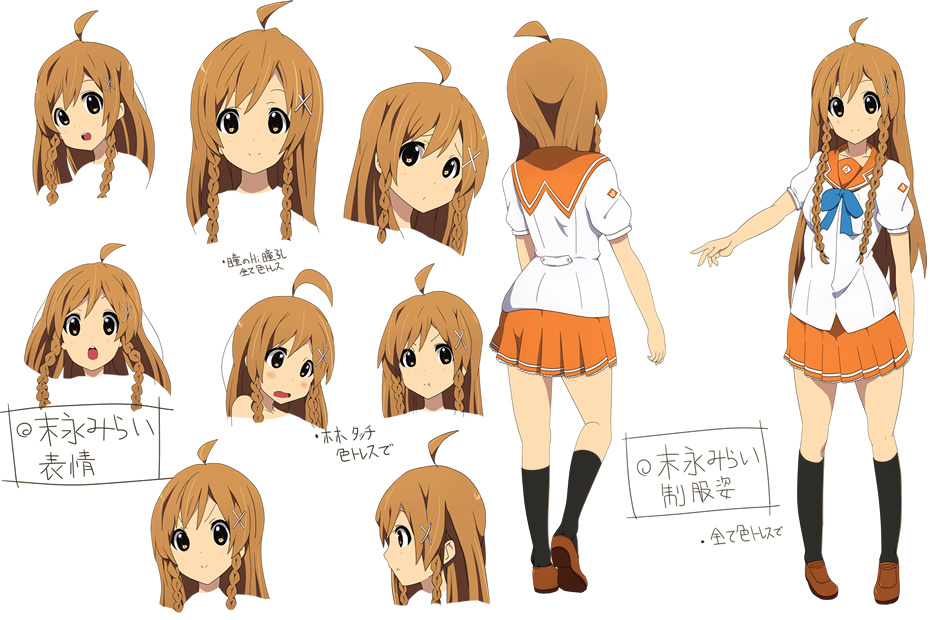

El anime es un medio de gran expansión en Japón, siendo al mismo tiempo un producto de
entretenimiento comercial y cultural, lo que ha ocasionado un fenómeno cultural en masas populares y
una forma de arte tecnológico.
Es potencialmente dirigido a todos los públicos, desde niños, adolescentes, adultos, hasta
especializaciones de clasificación esencialmente tomada de la existente para el manga
(historieta japonesa), con clases base
diseñadas para especificaciones sociodemográficos tales como empleados, amas de casa, estudiantes,
etc. Por lo tanto, pueden hacer frente a los sujetos, temas y géneros tan diversos como el amor,
aventura, ciencia ficción,
cuentos infantiles, literatura, deportes, horror, fantasía, comedia y muchos otros.
El anime tradicionalmente es dibujado a mano y al principio los procesos realizados de forma digital
eran muy específicos (retoque y montaje). Sin embargo, en la actualidad las tareas más comunes
dentro de la producción de
una animación, como podría ser el coloreado o los efectos visuales (brillos, sombras, luz ambiental,
etc.), se hacen con aplicaciones digitales, que permiten un mayor control sobre el trabajo y ayudan
a agilizar la labor de
los dibujantes a niveles insospechados en un proceso de animación tradicional. Sus guiones incluyen
gran parte de los géneros de ficción y son transmitidos a través de medios audiovisuales
(transmisión por televisión,
distribución en formatos de vídeo doméstico y películas con audio). La relación del anime japonés
con el manga es estrecha, pues históricamente una gran cantidad de series y trabajos de anime se
basan en historias de
manga populares. Además, también guarda estrecha relación con las novelas visuales.
El anime se caracteriza fundamentalmente por el uso particular de la llamada animación limitada, la
expresión en plano, la suspensión del tiempo, su amplitud temática, la presencia de personajes
históricos, su compleja línea
narrativa y sobre todo, un peculiar estilo de dibujo, con personajes caracterizados por ojos grandes
y ovalados, de línea muy definida, colores llamativos y movimiento reducido de los labios.
La industria del anime
Entre la década de 1990 y el 2000, la producción de ánime se ha incrementado de una manera muy
grande, creando grandes cantidades de dinero.
Ingresos en Yenes
Año
Ingresos realizados por el Anime
Millones de yenes fuera de Japón
Millones de yenes en Japón
1999
1561
8233
2000
5452
9393
2001
7154
8876
2002
6253
114 42
Ingresos realizados por el Anime
CARACTERISTICAS DEL ANIME
El anime posee las siguientes caracteristicas:
Trama
Romanticismo
Realismo
Humanidad, naturaleza y tecnología
Referencias culturales
El sentido del deber
Diseño de animación
Aunque el ánime se considera separado de los dibujos animados, este utiliza muchas
características aplicadas en las caricaturas como guion gráfico, actuación de voz, diseño de
personajes, entre otras. El ánime también
tiende a tomar prestados elementos de muchos textos de manga en el fondo, y los paneles de
diseños también. Por ejemplo, un opening puede emplear paneles a contar la historia, o para
dramatizar una cuestión de efecto humorístico.
Dirección de una película
Una de las principales innovaciones introducidas por el anime es la recuperación de técnicas que
se utilizan para compensar la animación limitada, muy similares a los utilizados en la dirección
del cine. Entre los movimientos
de cámara y efectos más utilizados se pueden distinguir: la corrección, o imágenes fijas; el
deslizamiento, el diseño de deslizamiento a través del marco, zoom, en el que la cámara se aleja
o enfoca; y técnicas basadas en la
distancia relativa de los dibujos para acelerar o frenar el movimiento de un elemento; el pan,
cuando la cámara realiza una visión general de la estructura horizontal, la inclinación cuando
el pan es vertical es similar a la
sartén, con la cámara que sigue a la acción, o de un único elemento de la misma empresa
(seguimiento pan) o el mismo elemento, pero uno al lado del otro (de seguimiento),
desvanecimiento, que se descoloran de negro a blanco
(a menudo en un marco fijo de mucho cuidado), también la técnica donde la imagen empuja a las
anteriores, y la pantalla se divide, el cuadro se divide en varias partes, cada una con una
visión diferente de la misma escena,
la iluminación de fondo, el marco que añade una celda negra a excepción de la parte que se desea
iluminar.
Diseño de personajes
En el anime, el diseño de personajes puede variar de ciertas maneras dependiendo de la época o los
dibujantes. Cabe destacar que en el ánime son usualmente influenciados más de un tipo de estilo de
brocha más que la caligrafía de lápiz.
Algunas características visibles son:
• Los ojos: comúnmente son muy grandes, ovalados, muy definidos y con
colores llamativos como rojo, rosa, verde, morado, aparte de los normales como café y azul.
Frecuentemente se nombra a Osamu Tezuka como quién introdujo ojos grandes
para dar más personalidad y expresiones faciales a personajes del anime. Tezuka usó esta técnica
primeramente con Astroboy, manteniendo los demás personajes con ojos pequeños.
• El cabello: hay de todas formas, tamaños y volúmenes, para personajes
masculinos o femeninos. Además de una gran variedad de colores como los de los ojos. Pudiendo tener
diferentes formas de sombreado para darle el volumen deseado.
• El cuerpo: puede ser muy parecido a las proporciones del cuerpo humano,
aunque de una manera muy escultural como en el moe. Al mantener las proporciones que el cuerpo
humano, los personajes inevitablemente son demasiado grandes y altos,
por eso nunca se ven totalmente dentro de una escena, siempre es una proporción de 1/4 (cabeza y
hombros), por la mitad (de la cintura hacia arriba), o deslizar una escena para mostrar todo el
personaje.
• La cara: el ánime utiliza una amplia variedad de expresiones faciales
para denotar estados de ánimo y pensamientos en comparación con la animación occidental.36 La nariz
y la boca son pequeños, el mentón tiene gran parecido al del ser humano.
Otros elementos propios del ánime son comunes y a menudo en la comedia los personajes que están
conmocionados o sorprendidos harán una "cara de culpa" en la que se expone una expresión
extremadamente exagerada.

Audio
La banda sonora utilizada en los diferentes formatos suele ser llamada OST como abreviación de
Original Soundtrack. Esta puede estar compuesta de:
• Opening (o apertura): Canción puesta al inicio de la animación (ovas y
capítulos de series) cuando aparecen los créditos iniciales, es acompañada una animación que suele
caracterizar la serie. Pueden ser interpretadas o compuestas por bandas o cantantes populares en Japón.
• Ending (o clausura): Canción puesta al final de la animación (ovas y
capítulos de series) cuando aparecen los créditos finales, es acompañada una animación más simple que la
del opening. Pueden ser interpretadas o compuestas por bandas o cantantes populares en Japón.
• Soundtrack central (banda sonora): Canciones que se utilizan para acompañar
las escenas, dependiendo de los directores, puede usarse una composición compleja de ópera.
• BGM o Background Music: Pistas musicales (muy pequeñas que no alcanzan a ser
una canción) utilizadas para acompañar las escenas.
• Bonus o Extras: Canciones compuestas especialmente para la animación pero que
no aparecen en esta. Pueden ser piezas inspiradas en esta o canciones pensadas desde el punto de vista
de un personaje e interpretadas por el mismo seiyū, actor de voz
Peliculas
Son los largometrajes producidos por las compañías, pueden ser historias originales basadas en algún
manga o muchas veces en las series de ánime que pueden presentar historias alternas o un tiempo
lógico establecido de la serie. Normalmente este complejo (de 50 a 120 minutos)
de películas difieren bastante de otros formatos de animación -por ejemplo, la calidad de imagen- y
en consecuencia causa mayores costes de producción.
Kimi No Nawa
Sinopsis
Los protagonistas, Taki y Mitsuha, son dos completos desconocidos, a pesar de eso, están destinados
a entenderse. Durante el sueño, ambos adolescentes intercambian sus cuerpos, con resultados
impredecibles en la vida de ambos.
Mitsuha es una joven de pueblo que anhela la emoción de la vida de la ciudad. Un día, sueña con un
chico tal y como desea, al mismo tiempo el chico en cuestión, Taki, de la gran ciudad, sueña a su
vez con Mitsuha, una encantadora
chica del campo. Taki y Mitsuha descubren un día que durante el sueño sus cuerpos se intercambian, y
comienzan a comunicarse por medio de notas. A medida que consiguen superar un reto tras otro, se va
creando entre los dos un vínculo
muy especial. La inconveniencia sucede cuando ambos, tras saber su conexión especial por lazos
temporales (que suceden por medio de los sueños) descubren un enorme deseo de querer conocer al
otro. Para su desdicha, Taki, descubre que hay diferencias temporales.